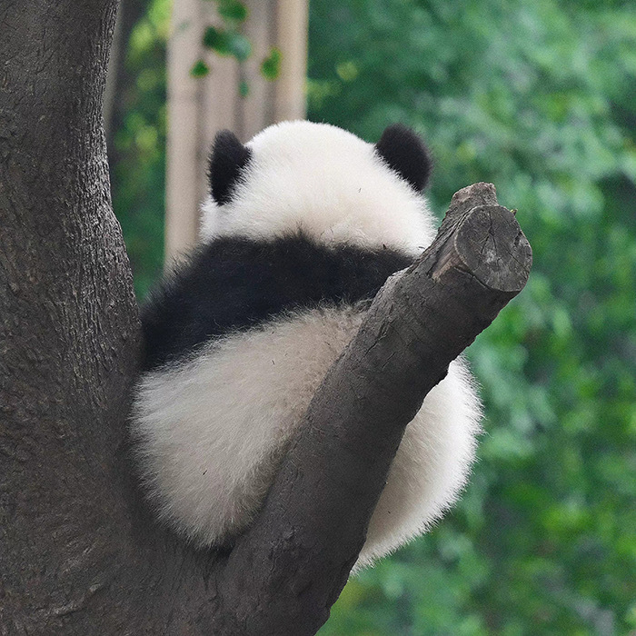

Explore the living habits of giant pandas and unlock the mysteries of their captivating existence!
On this page, embark on a journey to uncover the secrets of their daily lives and extraordinary habits. From their bamboo feasts to their playful antics, delve into the enchanting realm of panda behavior like never before. Prepare to be amazed by their unique adaptations and discover what makes these iconic creatures truly remarkable.

Feeding Habits
Feeding Habits
Giant pandas are primarily herbivores, with bamboo making up 99% of their diet. They have evolved a specialized digestive system for the tough bamboo stalks, which are low in nutrients and high in fiber.
Pandas spend up to 14 hours a day eating bamboo to meet energy needs. They have a pseudo thumb that helps them grip bamboo stalks and strip off the leaves. Despite their carnivorous ancestry, pandas have adapted to a vegetarian diet over millions of years.
Living Habitat
Living Habitat
Giant pandas are native to the mountainous regions of central China, where they inhabit dense bamboo forests. They are well adapted to their cold, wet environment, with thick fur to keep them warm and large paws for walking on snow. Pandas are excellent climbers and swimmers.
However, their habitat is under threat from deforestation and human encroachment. Conservation efforts are underway to protect their natural habitat and ensure the survival of this iconic species.
Behavior Habits
Behavior Habits
Giant pandas spend half of their day sleeping. In the wild, giant pandas sleep for 2 to 4 hours between meals, lying flat on their backs, lying on their sides, lying on their stomachs, stretching out or curling up in a ball are all their preferred ways of sleeping.
Typically, giant pandas are always very docile in nature, rarely actively attacking other animals or people, and always adopting an evasive approach when they meet by chance in the wild.
Reproduction
Reproduction
Giant pandas usually live in isolation, but during the breeding season, males and females are attracted and begin to engage in a variety of courtship activities in the dense bamboo forests. Giant pandas are polygynous. They give birth to a small number of cubs in their lifetime and the cubs are not easy to survive. Due to the high degree of specialization in both reproductive ability and parenting behavior, the population growth of giant pandas is very slow.